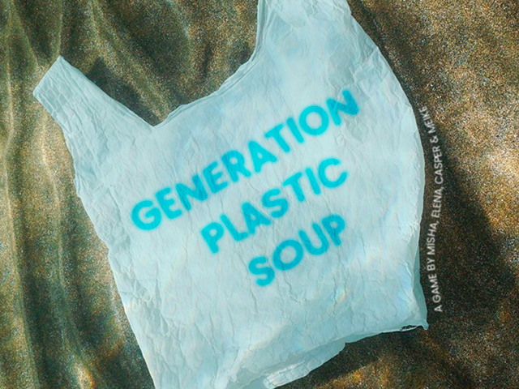

Over mij: De digitale ambachtsman
Hoi! Leuk dat je mijn portfolio hebt gevonden. Ik ben Casper, geboren in '97 in Delft en momenteel in de afrondende fase van mijn studie Communication and Multimedia Design (CMD) aan de Hogeschool Utrecht.
Mijn aanpak:
Mijn achtergrond is een tikkeltje onconventioneel. Voordat ik de digitale wereld van UI/UX en design omarmde, werkte ik dagelijks met mijn handen: van houtbewerking en elektra tot tuinbouw. Die praktische 'makers-mindset' laat ik niet los; ik combineer het nu dagelijks met mijn werk in CMD. Of ik nu een logo ontwerp, een interactieve installatie bouw of een complexe Discord-community manage—ik houd ervan om de brug te slaan tussen tastbare materialen en digitale interfaces.
Ik geloof niet in alleen maar achter een scherm zitten. Design is voor mij een proces van bouwen en tinkeren, of dat nu een kast is geïnspireerd op het Poul Cadovius Royal System, of het beheren van mijn eigen Linux AI Homelab dat dit portfolio en mijn experimentele projecten aanstuurt.
Work

Generation Plastic Soup
2025

Street Fresh
2024

Samen Spelen
2024

Grijpmachine
2024

Kodak
2024

Bomby Bird
2024

Picknicken met Sophie
2023

OSRS Kerst
2023

De Grinch
2023

Vechtclub XL
2023

Hu Begeleidt
2022

Dan maar hier!
2022
Contact
Let's connect. Feel free to reach out for collaborations or just to share ideas.